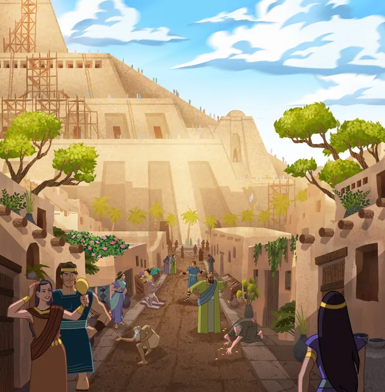

Natural Man
"This battle between our carnal and our spiritual natures isn't a new thing. In his final sermon to his people, King Benjamin taught that “the natural man is an enemy to God, and has been from the fall of Adam, and will be, forever and ever, unless he yields to the enticings of the Holy Spirit, and putteth off the natural man and becometh a saint through the atonement of Christ the Lord."
---President M. Russell Ballard
What is the Natural Man?
"A person who choose to be influenced by the passions, desires, appetites, and senses of the flesh rather than by the promptings of the Holy Spirit." (Guide to the Scripture: Natural Man)
"For the natural man is an enemy to God, and has been from the fall of Adam, and will be, forever and ever..." (Mosiah 3:19)
How can we do "Putting Off the Natural Man"?

"...unless he yields to the enticings of the Holy Spirit, and putteth off the natural man and becometh a saint through the atonement of Christ the Lord, and becometh as a child, submissive, meek, humble, patient, full of love, willing to submit to all things which the Lord seeth fit to inflict upon him, even as a child doth submit to his father." (Mosiah 3:19)
Following Jesus Christ His teaching and example are always the ways to put off the natural man. For example, we can set a weekly goal that helps us focus on developing one of the Christlike attributes. During that week, we can pay attention to the scriptures that we read each day and see how we can apply them to our lives, in order to develop that Christlike attributes. Then, evaluate our effort at the end of the day and plan how we can do better at next day.